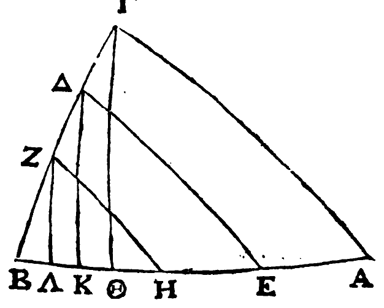
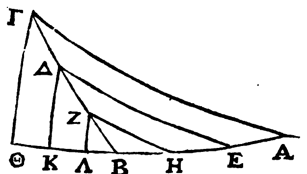
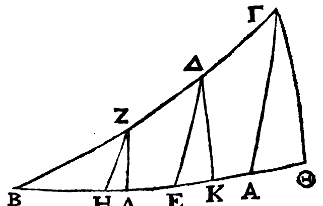
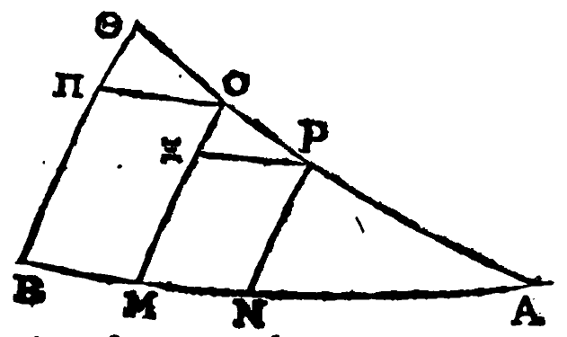

Proposition III.13 — Theorem: Oblique-Ascension Differences¶
Menelai Alexandrini Sphaericorum Lib. III Prop. XIII (Halley 1758, pp. 101–104)
Enunciation (Halley 1758, pp. 101–102)
If the greater side of a non-equilateral triangle do not exceed a quadrant of a circle, and on the less side two arcs be taken, from whose extremities arcs be drawn to the base containing with it angles equal to the angle which the remaining side contains with the same; and from the same points other arcs be drawn perpendicular to the base; then if the two
f. 0118 · p. 102

arcs intercepted between those which form equal angles with the base be equal, the arcs intercepted on the base between the perpendiculars shall be unequal; and the greater of them shall lie adjacent to the less side of the triangle. But if the two arcs cut off from the base by the perpendiculars be equal to one another, then the arcs intercepted between those which make equal angles with the base shall be unequal; and the greater of them shall be adjacent to the greater side; and the other consequences shall come to pass as we stated, after the example of the preceding propositions.
Let \(\triangle \mathrm{AB\Gamma}\) be a spherical triangle, and let side \(\widehat{\mathrm{A\Gamma}}\) be greater than \(\widehat{\mathrm{\Gamma B}}\), yet not greater than a quadrant of a circle; and on \(\mathrm{B\Gamma}\) let arcs \(\widehat{\mathrm{\Gamma\Delta}}, \widehat{\mathrm{\Delta Z}}\) be taken, from whose endpoints let arcs be drawn to base \(\mathrm{AB}\) containing with it angles equal to the angle at \(\mathrm{A}\) on the same side, such as arcs \(\mathrm{\Delta E}, \mathrm{ZH}\); as also arcs \(\mathrm{\Gamma\Theta}, \mathrm{\Delta K}, \mathrm{Z\Lambda}\) perpendicular to base \(\mathrm{AB}\): I say that if arc \(\widehat{\mathrm{AE}}\) be equal to arc \(\widehat{\mathrm{EH}}\), arc \(\widehat{\mathrm{\Theta K}}\) will be less than arc \(\widehat{\mathrm{K\Lambda}}\); and if arc \(\widehat{\mathrm{\Theta K}}\) be equal to arc \(\widehat{\mathrm{K\Lambda}}\), arc \(\widehat{\mathrm{AE}}\) will be greater than arc \(\widehat{\mathrm{EH}}\); and the other things just stated will come to pass. And universally the ratio which arc \(\widehat{\mathrm{AE}}\) has to \(\widehat{\mathrm{EH}}\) will be greater than the ratio of arc \(\widehat{\mathrm{\Theta K}}\) to \(\widehat{\mathrm{K\Lambda}}\).
Since in the two spherical triangles \(\triangle \mathrm{AB\Gamma}, \triangle \mathrm{EB\Delta}\), the angles at points \(\mathrm{A}, \mathrm{E}\) are equal, while the angle at \(\mathrm{B}\) is common to both, and between them arcs \(\mathrm{\Gamma\Theta}, \mathrm{\Delta K}\) are drawn perpendicular to \(\mathrm{AB}\), (by Book III Prop. 4) the sine of arc \(\widehat{\mathrm{A\Theta}}\) will be to the sine of arc \(\widehat{\mathrm{\Theta B}}\) as the sine of arc \(\widehat{\mathrm{EK}}\) is to the sine of arc \(\widehat{\mathrm{KB}}\); and likewise as the sine of arc \(\widehat{\mathrm{EK}}\) is to the sine of arc \(\widehat{\mathrm{KB}}\), so the sine of arc \(\widehat{\mathrm{H\Lambda}}\) is to the sine of arc \(\widehat{\mathrm{B\Lambda}}\): and permutando, the sine of \(\widehat{\mathrm{A\Theta}}\) to the sine of \(\widehat{\mathrm{EK}}\) will be as the sine of \(\widehat{\mathrm{\Theta B}}\) to the sine of arc \(\widehat{\mathrm{BK}}\); and as the sine of \(\widehat{\mathrm{EK}}\) to the sine of \(\widehat{\mathrm{H\Lambda}}\), so the sine of \(\widehat{\mathrm{KB}}\) to the sine of \(\widehat{\mathrm{B\Lambda}}\): and wherever you draw a perpendicular, these sines will always be proportional. Now arc \(\widehat{\mathrm{A\Theta}}\) is greater than \(\widehat{\mathrm{\Theta B}}\), on account of arc \(\widehat{\mathrm{A\Gamma}}\) being greater than arc \(\widehat{\mathrm{\Gamma B}}\). Now if arc \(\widehat{\mathrm{\Theta K}}\) be equal to arc \(\widehat{\mathrm{K\Lambda}}\), the difference of arcs \(\widehat{\mathrm{A\Theta}}, \widehat{\mathrm{EK}}\), that is, the difference of
f. 0119 · p. 103



arcs \(\widehat{\mathrm{AE}}, \widehat{\mathrm{\Theta K}}\) will be greater than the difference of arcs \(\widehat{\mathrm{EK}}, \widehat{\mathrm{H\Lambda}}\)—that is, of arcs \(\widehat{\mathrm{EH}}, \widehat{\mathrm{\Lambda K}}\)—in the first figure; while in the second figure, the sum of arcs \(\widehat{\mathrm{AE}}, \widehat{\mathrm{\Theta K}}\) will be greater than the sum of \(\widehat{\mathrm{EH}}, \widehat{\mathrm{K\Lambda}}\). In either figure, therefore, arc \(\widehat{\mathrm{AE}}\) is greater than \(\widehat{\mathrm{EH}}\).
But if \(\widehat{\mathrm{AE}}\) be equal to \(\widehat{\mathrm{EH}}\): since in the first figure the difference of arcs \(\widehat{\mathrm{A\Theta}}, \widehat{\mathrm{EK}}\) (or of arcs \(\widehat{\mathrm{AE}}, \widehat{\mathrm{\Theta K}}\)) is less than the difference of arcs \(\widehat{\mathrm{EK}}, \widehat{\mathrm{H\Lambda}}\) (that is, of arcs \(\widehat{\mathrm{EH}}, \widehat{\mathrm{K\Lambda}}\)), and in the second figure the sum of arcs \(\widehat{\mathrm{AE}}, \widehat{\mathrm{\Theta K}}\) is less than the sum of arcs \(\widehat{\mathrm{EH}}, \widehat{\mathrm{K\Lambda}}\), in either figure arc \(\widehat{\mathrm{K\Theta}}\) will be less than \(\widehat{\mathrm{K\Lambda}}\). And universally the ratio of arc \(\widehat{\mathrm{AE}}\) to \(\widehat{\mathrm{EH}}\) will be greater than the ratio which arc \(\widehat{\mathrm{\Theta K}}\) has to \(\widehat{\mathrm{K\Lambda}}\). Whence also from the preceding proposition it will follow that the ratio of arc \(\widehat{\mathrm{AE}}\) to \(\widehat{\mathrm{EH}}\) is greater than the ratio of arc \(\widehat{\mathrm{\Gamma\Delta}}\) to \(\widehat{\mathrm{\Delta Z}}\). Quod erat demonstrandum.
In like manner it can be shown that if angle \(\angle \mathrm{A}\) of triangle \(\triangle \mathrm{AB\Gamma}\) be obtuse, and that at \(\mathrm{B}\) acute, and arc \(\widehat{\mathrm{B\Gamma}}\) do not exceed a quadrant; and on arc \(\mathrm{B\Gamma}\) two arcs be taken as \(\widehat{\mathrm{\Gamma\Delta}}, \widehat{\mathrm{\Delta Z}}\), and to base \(\mathrm{AB}\) two arcs \(\mathrm{\Delta E}, \mathrm{ZH}\) be drawn containing with it angles equal to angle \(\angle \mathrm{A}\) on the same side; and perpendiculars \(\mathrm{\Gamma\Theta}, \mathrm{\Delta K}, \mathrm{Z\Lambda}\) also be drawn: then the same things will also come to pass as we have just stated. And universally the ratio of arc \(\widehat{\mathrm{AE}}\) to \(\widehat{\mathrm{EH}}\) will be greater than the ratio of arc \(\widehat{\mathrm{\Theta K}}\) to \(\widehat{\mathrm{K\Lambda}}\). Whence also it will follow that the ratio of \(\widehat{\mathrm{AE}}\) to \(\widehat{\mathrm{EH}}\) is greater than the ratio of arc \(\widehat{\mathrm{\Gamma\Delta}}\) to \(\widehat{\mathrm{\Delta Z}}\). Quod erat demonstrandum.
Scholion (Halley 1758, pp. 103–104). “But that these things may be better understood, it seemed good to subjoin this Scholion. Since the sine of arc \(\widehat{\mathrm{A\Theta}}\) is to the sine of arc \(\widehat{\mathrm{\Theta B}}\) as the sine of arc \(\widehat{\mathrm{EK}}\) to the sine of arc \(\widehat{\mathrm{KB}}\), &c., let arcs \(\widehat{\mathrm{A\Theta}}, \widehat{\mathrm{\Theta B}}\) contain some angle \(\angle \mathrm{A\Theta B}\), and on \(\mathrm{A\Theta}\) let there be taken
f. 0120 · p. 104

arcs \(\widehat{\mathrm{AO}}\) equal to \(\widehat{\mathrm{EK}}\), as also \(\widehat{\mathrm{AP}}\) to \(\widehat{\mathrm{H\Lambda}}\); and let arcs \(\mathrm{OM}, \mathrm{PN}\) be drawn constituting with base \(\mathrm{AB}\) angles \(\angle \mathrm{M}, \angle \mathrm{N}\) equal to angle \(\angle \mathrm{B}\); and let \(\widehat{\mathrm{\Pi B}}\) be made equal to \(\widehat{\mathrm{OM}}\), and \(\widehat{\mathrm{M\Xi}}\) equal to \(\widehat{\mathrm{PN}}\): therefore (by Book III Prop. 2) arc \(\widehat{\mathrm{OM}}\) will be equal to arc \(\widehat{\mathrm{KB}}\) in the preceding figures, and \(\widehat{\mathrm{PN}}\) to arc \(\widehat{\mathrm{B\Lambda}}\). Accordingly arc \(\widehat{\mathrm{\Theta O}}\) will be equal to the difference of arcs \(\widehat{\mathrm{AE}}, \widehat{\mathrm{\Theta K}}\) in the first figure, or to the sum of \(\widehat{\mathrm{AE}}, \widehat{\mathrm{\Theta K}}\) in the second: and arc \(\widehat{\mathrm{OP}}\) will be equal to the difference or sum of arcs \(\widehat{\mathrm{EH}}, \widehat{\mathrm{K\Lambda}}\). Arc \(\widehat{\mathrm{\Theta\Pi}}\) will also be equal to arc \(\widehat{\mathrm{\Theta K}}\), and \(\widehat{\mathrm{O\Xi}}\) to \(\widehat{\mathrm{K\Lambda}}\). Now, by the eleventh preceding proposition, the ratio of arc \(\widehat{\mathrm{O\Theta}}\) to \(\widehat{\mathrm{\Theta\Pi}}\) is greater than the ratio of \(\widehat{\mathrm{OP}}\) to \(\widehat{\mathrm{\Xi O}}\); that is, the ratio of the difference or sum of arcs \(\widehat{\mathrm{AE}}, \widehat{\mathrm{\Theta K}}\) to arc \(\widehat{\mathrm{\Theta K}}\) is greater than the ratio of the difference or sum of arcs \(\widehat{\mathrm{EH}}, \widehat{\mathrm{K\Lambda}}\) to arc \(\widehat{\mathrm{K\Lambda}}\): componendo therefore in the case of the first figure, or dividendo in the case of the second figure, the ratio of \(\widehat{\mathrm{AE}}\) to \(\widehat{\mathrm{\Theta K}}\) will be greater than the ratio of \(\widehat{\mathrm{EH}}\) to \(\widehat{\mathrm{K\Lambda}}\). And permutando the ratio of \(\widehat{\mathrm{AE}}\) to \(\widehat{\mathrm{EH}}\) will be greater than the ratio of \(\widehat{\mathrm{\Theta K}}\) to \(\widehat{\mathrm{K\Lambda}}\); which ratio indeed (by the immediately preceding proposition) is greater than the ratio of \(\widehat{\mathrm{\Gamma\Delta}}\) to \(\widehat{\mathrm{\Delta Z}}\); therefore the ratio of \(\widehat{\mathrm{AE}}\) to \(\widehat{\mathrm{EH}}\) is much greater than the ratio of \(\widehat{\mathrm{\Gamma\Delta}}\) to \(\widehat{\mathrm{\Delta Z}}\). Quod erat demonstrandum.”